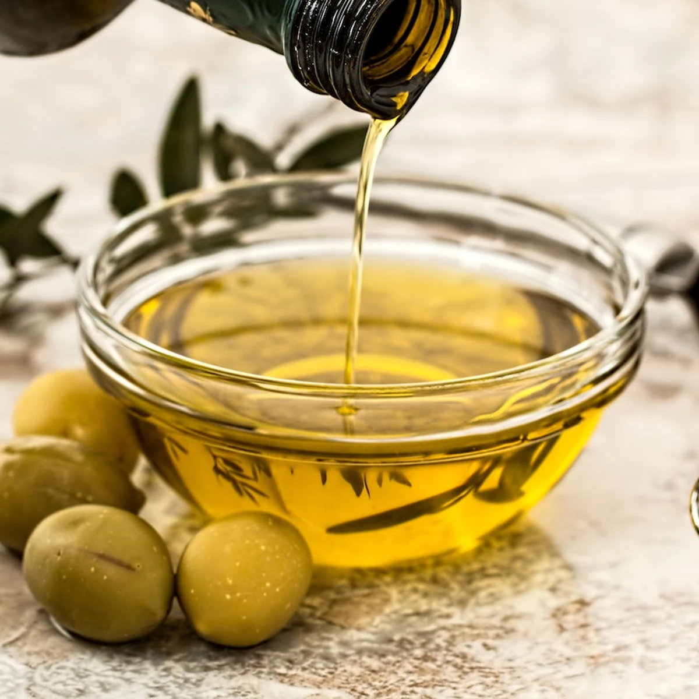

Patatas fritas
Componentes:
- 3 o 4 patatas (300gr)

- 4 dientes de ajo
- Aceite de oliva 
- Sal
https://internationaloliveoil.org/
Procedimiento:
- Calentar el aceite en la sarten
- Si el aceite está demasiado caliente, quemas las patatas
- La temperatura ideal oscila entre 120 ° C y 150 ° C.
- Añadir las patatas cortadas, la sal y el ajo
- Freir (al gusto)
- Emplatar
- Cocinar con especiass
- Presentarme con salsas.